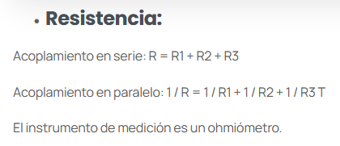
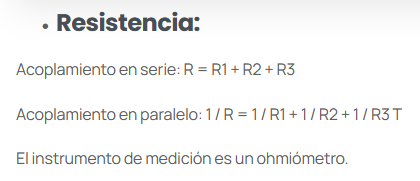

FUE DESCUBIERTA POR:
JAMES PRESCOTT JOULE
DESCUBIRMIENTO
Los primeros indicios que tenemos de la historia de la energía solar térmica se remontan a las civilizaciones griegas y romanas del siglo III a.C. e incluso antes. Durante esta época, se obtenía fuego gracias a la concentración de los rayos del sol.
¿QUE ES?
Es la energía que se da con transferencias de energía causadas por las diferencias de temperatura. la temperatura, a su vez, es una medida de la energía cinética de las moléculas que componen un cuerpo. esta energía se presenta al momento de hervir agua, en una chimenea, al ser ejercicio, aguas termales y donde más la podemos adquirir es mediante el sol.
3 FORMAS EN LAS QUE SE DIVIDE LA ENERGIA TERMICA
CONDUCCION:
La transferencia de energía se da mediante el contacto entre los cuerpos, sin intercambio de materia.
CONVENCION:
La transferencia de energía se produce mediante el movimiento de un fluido (líquidos o gases). Si, por ejemplo, se mezclan dos fluidos, el de mayor temperatura le transferirá calor al otro, por convección. En este caso el agua cuando alcanza los 100°C cambia de fase a gaseoso(hervir).
RADIACION:
La energía se transfiere sin necesidad de contacto físico y por medio de ondas electromagnéticas. Por ejemplo, el sol transmite energía térmica por radiación.
MARCO TEORICO
FORMULA GENERAL
Q = mcΔT
UNIDADES
Q = El valor de la transferencia de calor.
m = La masa del material.
ΔT = La temperatura. cambio.
c = El calor específico.
FORMULA CONDUCCION
Q = (λ/d) S (Tf – Ti) t
UNIDADES
λ = El coeficiente de conductividad en kcal/m h °C.
d = El espacio entre dos superficies del mismo cuerpo (m).
S = Las superficies del mismo cuerpo (m2).
Tf = La temperatura final
Ti = La temperatura inicial
t = El tiempo en horas.
FORMULA CONVECCION
Q = a S (Tf – Ti) t
UNIDADES
a = El coeficiente de convección en kcal/m2 h °C.
S = Las superficies del mismo cuerpo (m2).
Tf = La temperatura final
Ti = La temperatura inicial
t = El tiempo en horas.
FORMULA RADIACION
Q = c S [(T2/100)4 – (T1/100)4] t
UNIDADES
c = El coeficiente de radiación (tabla en páginas siguientes).
T2 = La temperatura absoluta del objeto que irradia calor.
T1 = La temperatura absoluta del objeto irradiado.
S = Las superficies del mismo cuerpo (m2).
t = El tiempo en horas.
EJERCICIO APLICANDO LA ENERGÍA TÉRMICA
Cuántos Joules son necesarios para que 220 gr de agua 15°c se calientan hasta alcanzar 90°c en condiciones ideales. Recuerda que, para el agua, c = 1cal/g °C.

 
